Code and Data
|
Halide
Writing fast image processing pipelines is hard, because you need to simultaneously optimize for parallelism and locality (memory bandwidth). This usually wrecks the modularity, portability, and readability of your code, because it involves fusing all your pipeline stages into one architecture-specific monolithic mess. Trying alternative optimizations is then very painful, because it requires rearranging huge chunks of code and then fixing the bugs you inevitably introduced.
Halide makes it easier to explore possible optimizations by separating the specification of the algorithm from the specification of the "schedule", which defines what gets computed when and where it is stored. Halide is described in this SIGGRAPH 2012 paper. The compiler is open source, and can found found here. We welcome contributions and bug reports.
|
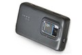 |
The FCam camera control API for the Nokia N900
We think you should be able to program your camera. This API turns your Nokia N900 into a programmable camera. It replaces key kernel drivers and disables the existing user-space daemons that mess with the sensor settings behind your back. This lets you easily program your N900 to take exactly the shots you want at the maximum possible frame rate. We've used this API with success teaching grad students computational photography, and it's the same API we use on the Frankencamera. The architecture behind this API is described in full in our SIGGRAPH 2010 paper.
|
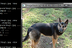 |
ImageStack
ImageStack is a command-line stack calculator for images that I have been slowly building up. It's a swiss-army knife for computational photography, with resampling, image arithmetic, alignment, gradient-domain operators, a wide variety of efficient linear and non-linear filters, wavelet transforms, Fourier transforms, deconvolution operators, and even some light field operators. Thanks to the help of the students in CS448f it also includes implementations of some recent SIGGRAPH papers. It's great in scripts, and you can also link to it as a library. Recently it has begun to include some metaprogramming tricks backported from Halide, so some routines are quite fast.
|
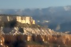 |
Fast High-Dimensional Bilateral Filtering
If you're looking for CPU or CUDA implementations of the Gaussian KD-Tree or the permutohedral lattice you can find them at their paper webpages here and here respectively. The CPU implementations have also been integrated into ImageStack, which you may find more convenient. My dissertation contains simple annotated versions of the code as appendices.
|
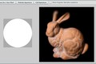 |
The Stanford Light Field Archive
This is our collection of light fields acquired with camera array, gantry, and light field microscope. Feel free to use any of the light fields on this page in your research (with credit). Also includes my light field viewing applet. To capture your own similar light fields all you need is a camera and some lego.
|
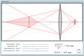 |
Photography Applets
Nora Willett, Katie Dektar, Marc Levoy and I made a range of applets to help teach concepts in photography for the digital photography course CS178. They explore topics in optics, color, and image processing.
If you like those, you may also enjoy my Toy optical bench applet. Drag the components in the upper left into the middle to place them. Shift-drag objects to rotate and scale them. Alt-drag objects to change their aspect ratio (this is how you change the power of a lens).
|
Publications
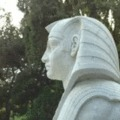 |
Fast Bilateral-Space Stereo for Synthetic Defocus
Jonathan T. Barron, Andrew Adams, YiChang Shih, Carlos Hernández
CVPR 2015 (Oral Presentation)
Supplemental Material
|
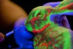 |
Sculpting by Numbers
Alec Rivers, Andrew Adams, Fredo Durand
ACM SIGGRAPH Asia 2012
|
|
Decoupling Algorithms from Schedules for Easy Optimization of Image Processing Pipelines
Jonathan Ragan-Kelley, Andrew Adams, Sylvain Paris, Marc Levoy,
Saman Amarasinghe, Frédo Durand
ACM SIGGRAPH 2012
|
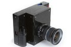 |
The Frankencamera: An Experimental Platform for Computational Photography
Andrew Adams, Eino-Ville Talvala, Sung Hee Park, David E. Jacobs,
Boris Ajdin, Natasha Gelfand, Jennifer Dolson, Daniel Vaquero,
Jongmin Baek, Marius Tico, Hendrik P. A. Lensch, Wojciech Matusik,
Kari Pulli, Mark Horowitz, Marc Levoy
ACM SIGGRAPH 2010
Reprinted in CACM November 2012
Also see:
Multi-exposure Imaging on Mobile Devices
Natasha Gelfand, Andrew Adams, Sung Hee Park, Kari Pulli
ACM Multimedia 2010
|
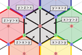 |
Fast High-Dimensional Filtering Using the Permutohedral Lattice
(See my dissertation for more detail)
Andrew Adams, Jongmin Baek, Abe Davis
Eurographics 2010
Runner-up for Best Paper
Also see:
Lattice-Based High-Dimensional Gaussian Filtering and the Permutohedral Lattice
Jongmin Baek, Andrew Adams, Jennifer Dolson
Journal of Mathematical Imaging and Vision 2012
|
|
Gaussian KD-Trees for
Fast High-Dimensional Filtering
(See my dissertation for more detail and algorithmic improvements)
Andrew Adams, Natasha Gelfand, Jennifer Dolson, Marc Levoy
ACM SIGGRAPH 2009
|
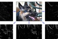 |
Viewfinder Alignment
Andrew Adams, Natasha Gelfand, Kari Pulli
Eurographics 2008
|
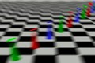 |
General Linear Cameras with Finite Aperture
Andrew Adams, Marc Levoy
EGSR 2007
|
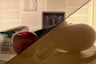 |
Veiling Glare in High Dynamic Range Imaging
Eino-Ville Talvala, Andrew Adams, Mark Horowitz, Marc Levoy
ACM SIGGRAPH 2007
|
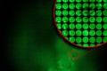 |
Light Field Microscopy
Marc Levoy, Ren Ng, Andrew Adams, Matthew Footer, Mark Horowitz
ACM SIGGRAPH 2006
|
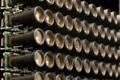 |
High Performance Imaging Using Large Camera Arrays
Bennett Wilburn, Neel Joshi, Vaibhav Vaish, Eino-Ville Talvala,
Emilio Antunez, Adam Barth, Andrew Adams, Mark Horowitz, Marc Levoy
ACM SIGGRAPH 2005
|
Research Interests
I like photography and I like programming things. That's why digital cameras irritate me. They are quite capable computers internally, with various input devices, sensors, displays, CPUs, DSPs, etc. Yet you can't program them, and they just act like a film camera. You press the trigger, the shutter opens briefly, the sensor is exposed to light focused by the lens, some post-processing is done, and you get a picture.
It's time to move beyond this model of single-frame photography. This is not news - everyone in computational photography knows this. You can do wonderful things if you acquire a variety of data under different capture parameters, illuminations, and/or viewing directions, and then algorithmically combine these into the final representation. You can make panoramas with a super-wide field of view, or take high-dynamic-range images you can view on a regular screen. With the right data you can even change the focus after-the-fact, or do a flyaround of a landmark you and others have photographed.
Every year we see a trickle of the most established of these algorithms make it into high-end consumer cameras. Why can't we program cameras to do these things ourselves? How are we supposed to do real-world photography research if we can't? There are three main roadblocks in the way. Surmounting them has defined my recent research.
- Closed camera platforms. Most cameras aren't freely programmable by third parties. This artificially limits their functionality. We can sidestep this roadblock somewhat by making our own cameras or by using programmable camera-phones. If we can demonstrate the benefits of an open camera platform maybe the conventional camera manufacturers will eventually see the light.
- Difficulty of camera control. Most camera APIs are narrowly focused on film camera use-cases, and needlessly make impossible basic computational photography use-cases like alternating the exposure on every other frame. We attacked this problem by making our own camera architecture and API. We think this architecture is the right way to think about camera control.
- Difficulty of image processing on embedded devices. As computer scientists, we're used to programming in C and it being fast. This is no longer true. The rise of parallelism combined with the comparatively slow growth of memory bandwidth means that you can get 10x more speed that naive C by carefully optimizing for both. This is true on cameras, and also on conventional desktop cpus. Optimizing code in this way is a painful process. While you can peephole optimize individual routines to take advantage of parallelism, optimizing for locality involves fusing the operations that define your algorithm into one monolithic mess. Optimized libraries like IPP or fast implementations of OpenCV do the former but not that latter. We attacked this problem with Halide, a domain-specific programming language that separates the intrinsic algorithm from its optimizations for a particular pipeline and a particular machine.
Teaching Interests
I know of no more enjoyable use of an idea than telling someone else about it. My first foray into teaching was as a section leader for Higher Computing 1A and Higher Computing 1B at UNSW, teaching Haskell and C respectively to the advanced freshmen. My last class presented me with cake and
a certificate for Inconceivable Achievement for my
efforts. This is my favorite award. I don't even know how good it is (by definition).
I came to Stanford in 2004 and was a TA for CS248 - Introduction to Computer Graphics here in 2005, 2006, and 2007. In 2008 I had a chance to co-teach a graduate level computational photography course CS448a with Marc Levoy and Kari Pulli, which was a lot of fun. For all this I was given two teaching awards - the Forsythe Teaching Award from the CS department, and the Centennial Teaching Assistant Award from the school of engineering.
Marc and I then went on to design Stanford's first large undergraduate digital photography course in spring 2009, for which I was also a TA. Stanford is a great place to photograph in the spring. Many of my students in that course are now much better photographers than I am, which is gratifying. After the course, two of them (Nora Willet and Katie Dektar) worked with us over the summer to make a set of educational photography applets that help explain many of the concepts in the course.
In the fall of 2009 I created and taught CS448f - a course on practical image processing for photography and vision with a focus on implementing recent cool stuff from SIGGRAPH. The students were great and I had a blast. For this course (among other things) I was awarded the Walter J. Gores award, which is Stanford's highest teaching award.
Academic Career
I did my undergraduate degree in Computer Science and Mathematics at
the University of New South Wales
in Australia, on a Science Faculty Scholarship. I graduated in 2003
with first class honours and the University Medal in Computer
Science. My undergraduate thesis was on polygon-rewriting grammars. It
included enough recursive postscript that it proved impossible to ever
convert to pdf. In 2004 I moved to Stanford to do a Masters in
Computer Science, became absorbed in computational photography
research, and completed a PhD under Marc Levoy in 2010. I'm now at MIT
as a post-doc working with Fredo Durand on fast image processing.
Personal
I was born in Tarrytown, New York, to Australian parents who then moved back to Australia. I grew up there and returned to the US for my graduate degree. I'm an anchor baby.
I keep all my photos online, if you wish to trawl through my life since I've owned a digital camera. Here are some of my favorites:
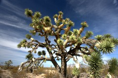
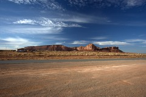
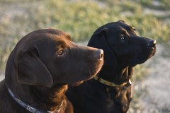
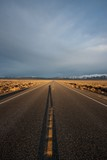
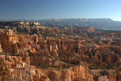
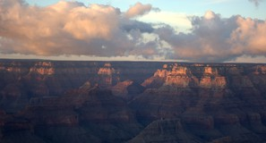
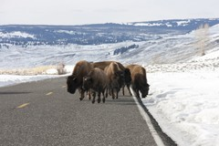
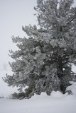
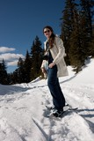
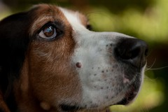
There's a story behind each of these photos (except for the mournful
basset hound - that's just how basset hounds look). Some of them were
probably taken by my wife Elena (pictured left of the basset hound),
who is a better photographer than I am.
|

{kind=link}
{kind=link}
{kind=link}
{kind=link}
{kind=link}
{kind=link}
{kind=link}
{kind=link}
{kind=link}
{kind=link}
{kind=link}
{kind=link}